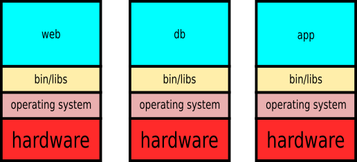
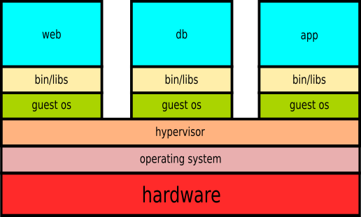
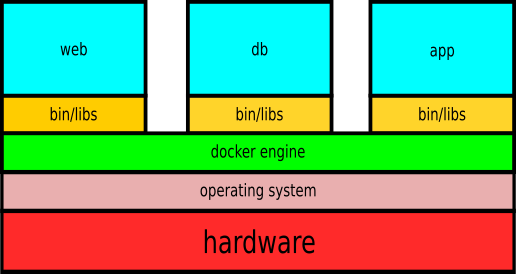

Virtualization -- About virtual machines and containers
Mon 29 January 2018 by Michael OlbergWhat is this about
The problems we are trying to solve:
- run software not supported by our operating system
- run software in well defined environments
Assume that you are asked to deploy a web application which stores and retrieves data from an SQL database engine. For security, reliability and scalability reasons you are supposed to implement the web server, the database engine and your application separately on individual hosts. You have the following choices:
Distributed hardware

Virtual machines

Containers

VirtualBox
Wikipedia
Oracle VM VirtualBox (formerly Sun VirtualBox, Sun xVM VirtualBox and Innotek VirtualBox) is a free and open-source hypervisor for x86 computers currently being developed by Oracle Corporation. Developed initially by Innotek GmbH, it was acquired by Sun Microsystems in 2008 which was in turn acquired by Oracle in 2010.
VirtualBox may be installed on a number of host operating systems, including: Linux, macOS, Windows, Solaris, and OpenSolaris.
It supports the creation and management of guest virtual machines running versions and derivations of Windows, Linux, BSD, OS/2, Solaris, Haiku, OSx86 and others, and limited virtualization of macOS guests on Apple hardware.
For some guest operating systems, a ``Guest Additions'' package of device drivers and system applications is available[10][11] which typically improves performance, especially of graphics.
Vagrant
Wikipedia
Vagrant is an open-source software product for building and maintaining portable virtual software development environments, e.g. for VirtualBox, Hyper-V, Docker, VMware, and AWS. The core idea behind it lies in the fact that the environment maintenance of virtualizations becomes increasingly difficult in a large software development project. Vagrant simplifies the necessary software configuration management in order to increase development productivity. Vagrant is written in the Ruby language, but its ecosystem supports development in almost all major languages.
Workflow
Boxes are available at e.g. https://vagrantcloud.com/, here we set up a 32-bit Ubuntu 12.04 virtual machine:
vagrant box add hashicorp/precise32
vagrant box list
mkdir precise32; cd precise32
vagrant init hashicorp/precise32
- edit the
Vagrantfileto suit your needs, add provisioning - guest will be able to access local files via
/vagrant!
vagrant up
vagrant ssh
- clean up when done:
vagrant destroy
vagrant box remove hashicorp/precise32
Provisioning
Vagrant.configure("2") do |config|
config.vm.box = "imondino/jessie32"
config.vm.provision :shell, :path => "vm_provision/provision.sh"
config.vm.network "private_network", ip: "10.0.0.10"
config.vm.provider "virtualbox" do |vb|
vb.customize ["modifyvm", :id, "--cpuexecutioncap", "50", "--cpus", "1"]
vb.memory = 1024
end
and in vm_provision/provision.sh:
#!/usr/bin/bash
apt-get update
ln -sf /usr/share/zoneinfo/Europe/Stockholm /etc/localtime
apt-get install -y apache2 apache2-utils
service apache2 restart
...